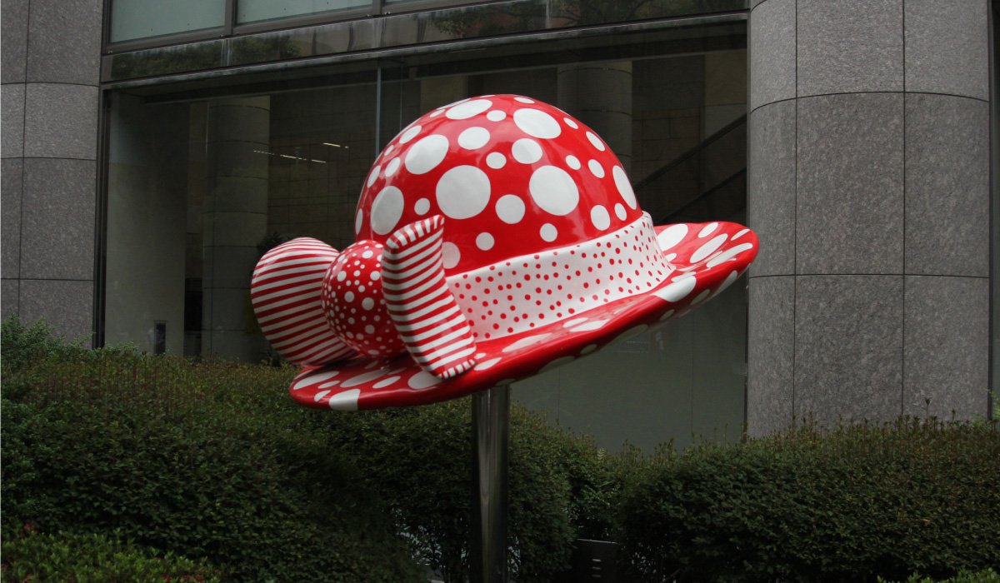
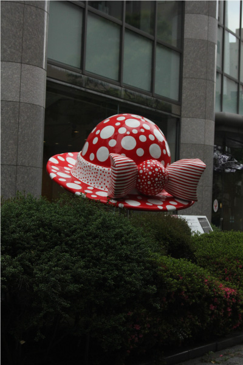
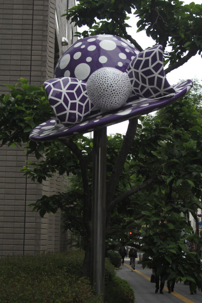
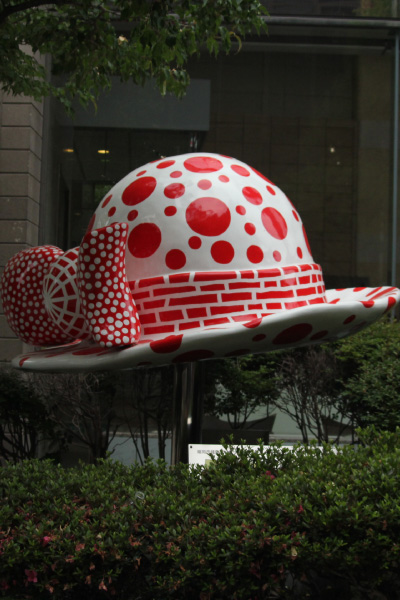

草間彌生
  
日本の芸術家、草間彌生氏。福岡市では彼女のパブリックアートが2つ見られる。その1つ
『三つの帽子』は、中央区舞鶴のあいれふに設置されている。歩道脇に設置された３体の
彫刻は草間の代名詞、水玉模様が施され、毒毒しさも感じる。『三つの帽子』は草間が
「歩く」をテーマにデザイン、制作した。ルイ・ヴィトンとのコラボレーションを行うなど、
今は世界的なアーティストである草間氏だが、この作品は彼女が世界規模で知られる前に
制作した物であり、たいへん貴重な屋外彫刻である。